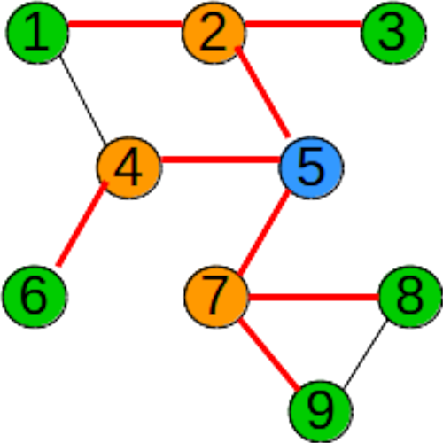

În parcurgerea în lățime se parcurge vârful de start, apoi vecinii acestuia, apoi vecinii nevizitați ai acestora, etc, până când sunt vizitate toate vârfurile accesibile.
Practic, pentru a stabili ordinea de vizitare se folosește o coadă, iar pentru a stabili dacă un vârf a fost sau nu vizitat se folosește un vector caracteristic.
Dacă graful nu este conex, în urma parcurgerii nu se vor vizita toate vârfurile. În urma parcurgerii în adâncime, muchiile folosite pentru parcurgere formează un arbore.
Acest arbore este graf parțial al grafului dat (dacă graful este conex), și se numește arbore parțial de parcurgere.
Funcția de mai jos presupune că un graf cu n vârfuri este memorat prin intermediul matricei de adiacență, vectorul x[] reprezintă coada, vectorul x[], aceste variabile fiind declarate global.
Funcția returnează numărul de elemente care au fost vizitate.
Vârfurile grafului au fost parcurse în ordinea: 5 2 4 7 1 3 6 8 9

Implementare C++
intbfs(int start){
int i,k,st,dr; //inițializez coada
st=dr=1;
x[1]=start;
v[start]=1; //vizitez vârful inițialwhile(st<=dr){ //cât timp coada nu este vidă
k=x[st]; //preiau un element din coadăfor(i=1;i<=n;i++) //parcurg vârfurile
if(v[i]==0 and a[k][i]==1){
//dacă i este vecin cu k și nu este vizitat
v[i]=1; //îl vizitez
x[++dr]=i; //îl adaug în coadă
}
st++; //șterg din coadă
}
return dr; //returnăm numărul de vârfuri vizitate
}